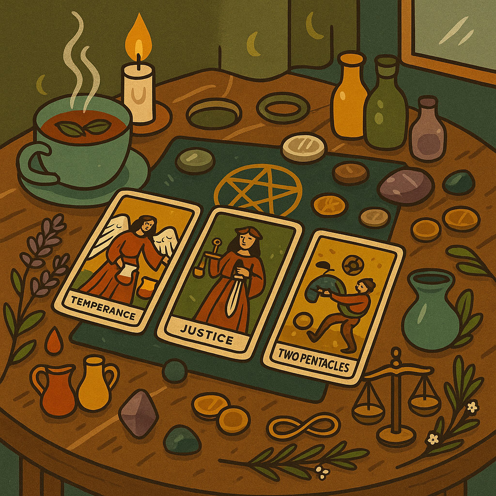
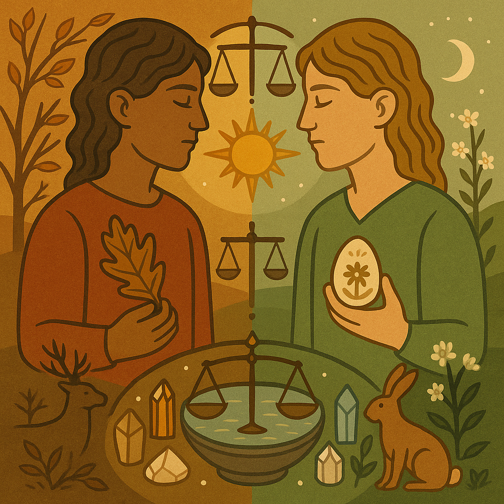
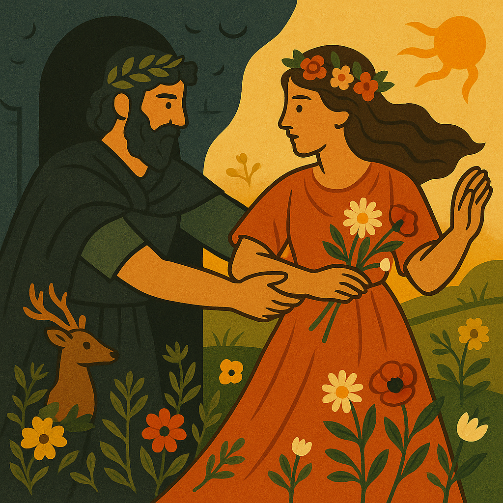

✦
Local producers
Fresh produce, artisan goods, seasonal treats, and stalls that make the harvest visible.
Mabon
Beeja Mara

A vibrant Beeja Mara gathering for local producers, seasonal food, music, firelight, and the rich abundance of the autumn harvest.

Why come
Food & drink
Seasonal, local, generous
Atmosphere
Music, fire, connection
Expect makers and growers, children’s treasure-hunt spirit, local wine, drumming, and the kind of autumn gathering that feels full before the first plate is served.
Mabon marks the second harvest in the global south: a time to notice what has ripened, what has been made possible, and what abundance looks like when shared in community.
This gathering brings that feeling into the open through local producers, seasonal food, music, conversation, children’s wonder, and a warm atmosphere rooted in Beeja Mara and Pure Mountain Farm.
The copy now leads with what people can actually feel and do, while still honoring the deeper seasonal context beneath it.
Fresh produce, artisan goods, seasonal treats, and stalls that make the harvest visible.
Live music, drumming, and bonfire warmth carry the gathering past a simple daytime browse.
A gentle invitation to notice the turning season and the abundance already in hand.
Children’s treasure-hunt energy, open space, and a welcoming atmosphere for all ages.

In the south, autumn arrives as many northern calendars are turning toward spring. This event chooses to honor the season under our own feet: harvest time, thanksgiving, local food, and a more grounded relationship to the cycles that shape everyday life.
Core themes
Fresh produce and ingredients grown with care and offered close to the source.

Crafted goods, symbolic objects, and handmade offerings from local makers.

Natural preparations, botanicals, and goods that support slower seasonal living.

Local wine and drinks that deepen the convivial, harvest-table atmosphere.
Food rooted in local ingredients and the pleasure of eating in good company.
Additional stall holders may still join the gathering, but the page no longer leans on empty future-year placeholders.
Community grown
Location: Pure Mountain Farm, Beeja Mara, 4 Tor Doone Lane
Time: Sunday 5 April · 11am—4pm
Feel: Come ready to wander, browse, eat, meet people, and settle into the rhythm of the day.
Getting there
Look for the Beeja Mara entrance on Tor Doone Lane
Arrive with enough time to wander the farm, browse the stalls, and ease into the day.
Bring
Your appetite and your curiosity
Come ready for seasonal food, good conversation, and a generous local atmosphere.